The transformation
From a desk and a clipboard to a barcode on a handlebar
The old rental process was manual end to end. Someone registered you, someone processed the paperwork, and you waited on both. The app removes the desk from the middle of the journey.
- Manual registration handled by a member of staff
- Paperwork and physical documentation for every rental
- A time-consuming process before anyone got on a vehicle
- Staff dependency — customers couldn't complete it alone
- Extra effort on both sides, for the rider and for the team
- Registration is digital — a mobile number and an SMS code
- Scan the QR printed on the scooter or bike to begin
- Self-service from first tap to end of ride
- Riding in a few taps rather than a few forms
- No paperwork — the receipt is an invoice in the app
Manual registration + Paperwork + Staff dependency Digital registration + QR code + Self-service + Quick ride
The promise
Step on and go
Everything in the product serves one sentence: get someone from standing beside a scooter to riding it, without asking anyone for help. The register flow is four screens. The rental flow is three taps and a swipe.
01 — Getting in
Four screens, and one of them is the splash
Registration asks for a mobile number, checks it with a four-digit code, then takes a name and an email. No documents, no card, no account password.
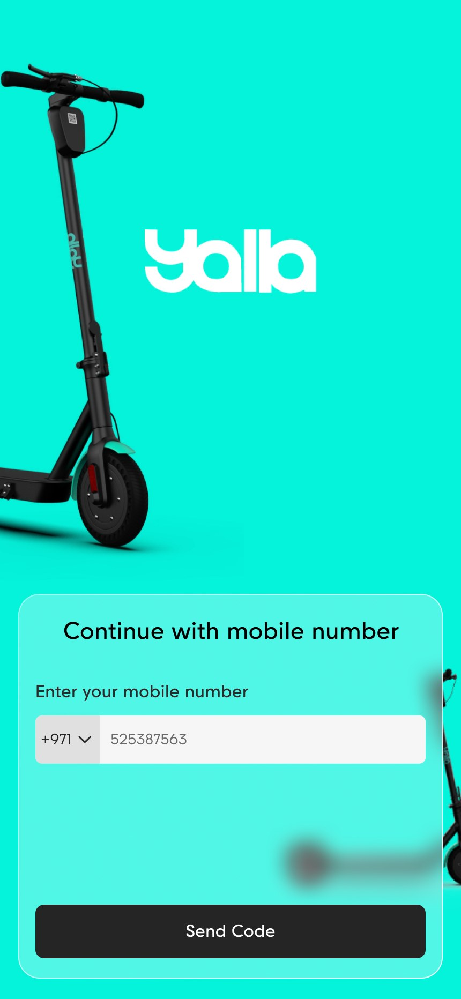
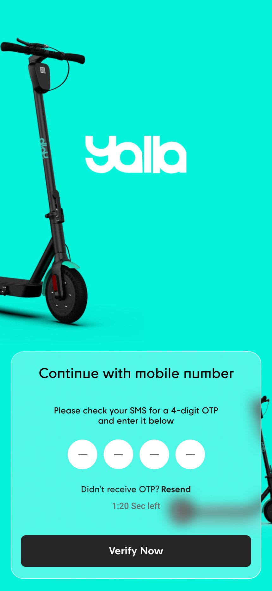
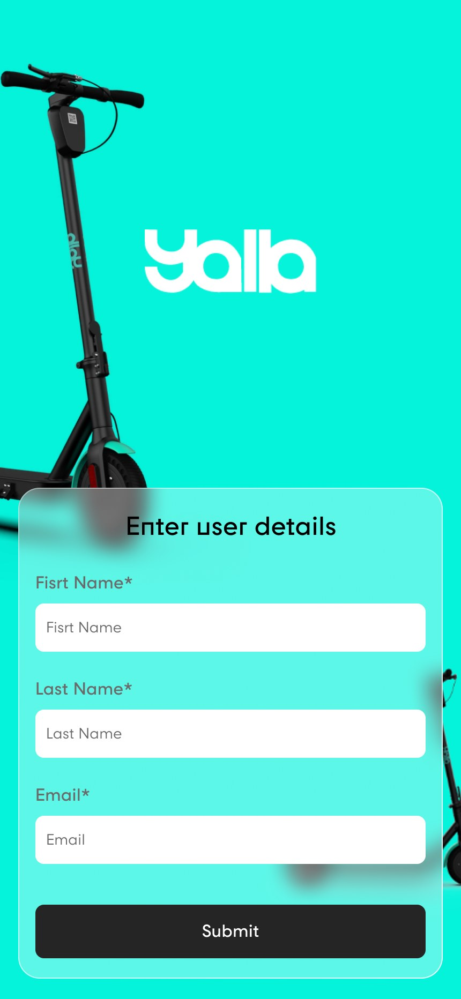
Splash, mobile number, one-time code, details. The same teal and the same scooter photograph carry through all four, so the flow reads as one screen changing rather than four separate pages.
The phone number is the account
There's no password to invent and no email confirmation to go and find. A number, a code that arrives in seconds, and you're in — which matters when the person registering is standing on a pavement next to the scooter they want to ride.
Verified state is visible later
The profile screen shows Mobile — Verified in teal and Email — Unverified in red. The email is optional at sign-up, so the app doesn't block on it; it just never pretends the address has been checked when it hasn't.
02 — Physical to digital
The handover point is a sticker
The app can only be as good as the moment it meets the vehicle. Every scooter and bike carries a printed panel — bilingual, numbered, with the QR code and the steps — and the app is designed around what that panel says.
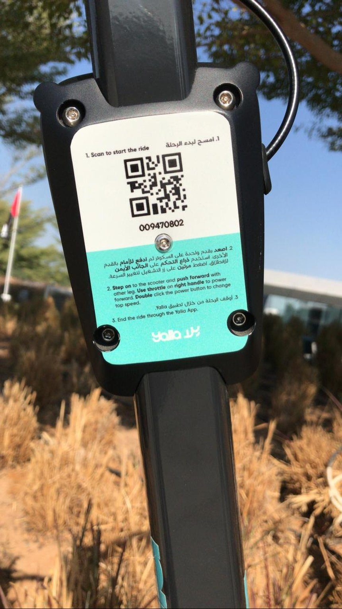
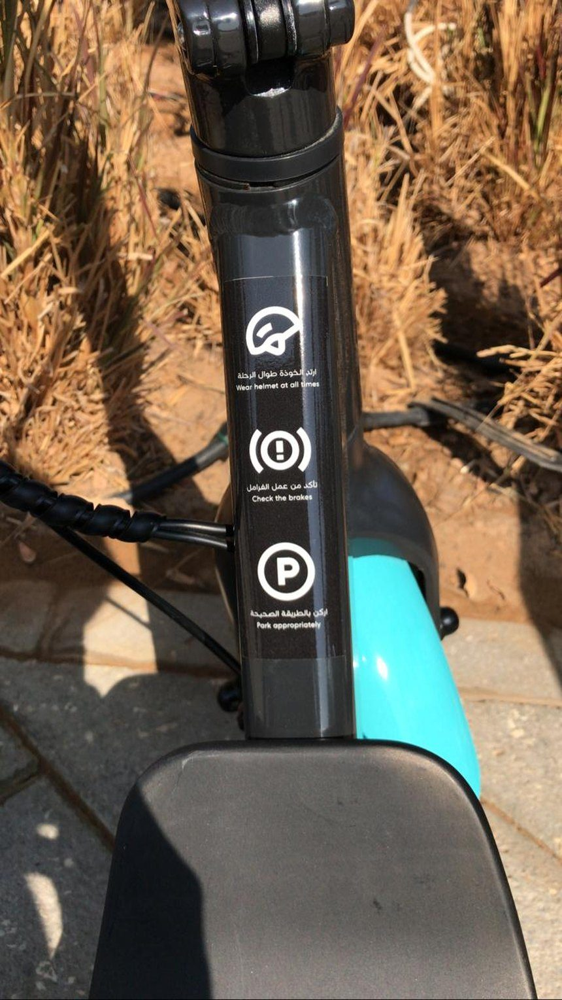
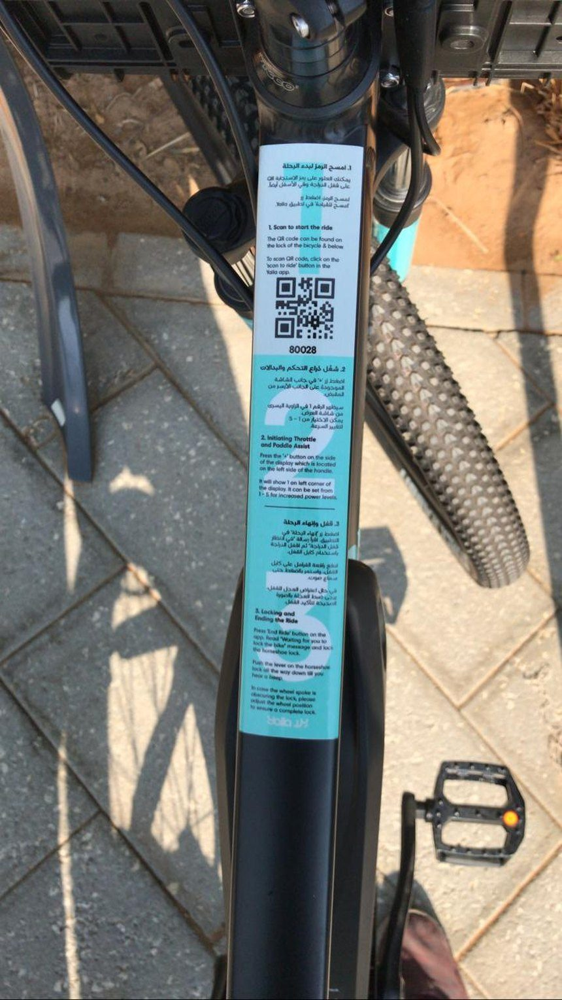
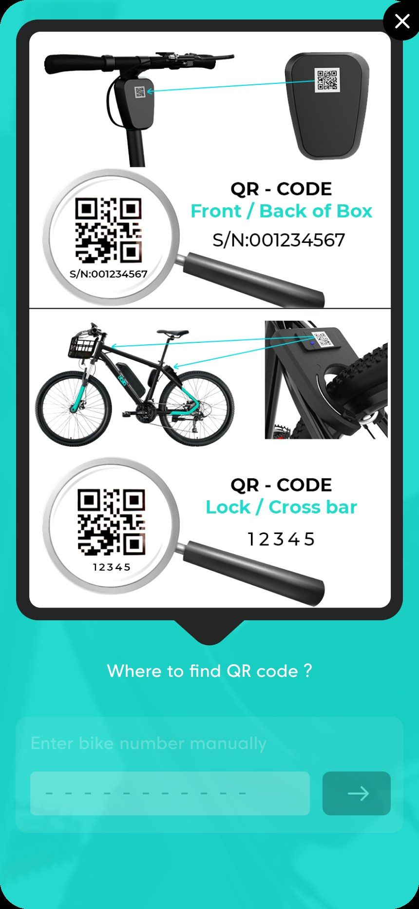
“Where to find QR code?” is a real question
The code sits in a different place on a scooter than on a bike — the box on the stem versus the lock or the cross bar. Rather than describe it, the app shows a magnified photograph of each, which is faster to read than a sentence when you're crouched next to the vehicle.
And a way through when the camera won't play
Every scan screen carries Enter bike number manually underneath, with a dashed field sized to the number printed on the panel. Dark, rain, a scratched sticker, a camera permission the rider declined — the flow doesn't dead-end, because the number on the vehicle is always readable by eye.
The design and the sticker were specified together. The panel prints the number below the code precisely so the manual fallback has something to fall back to.
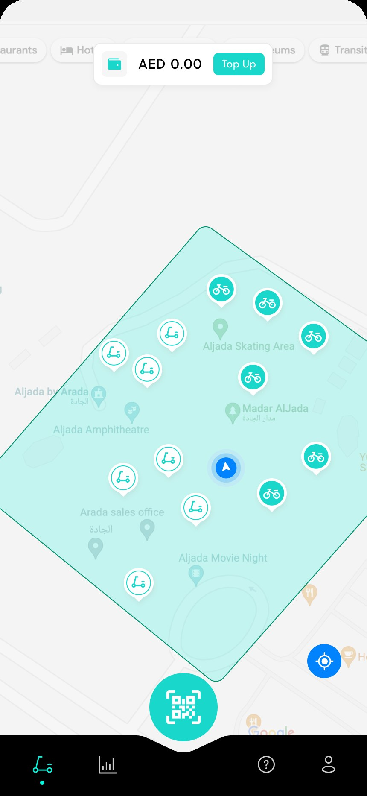
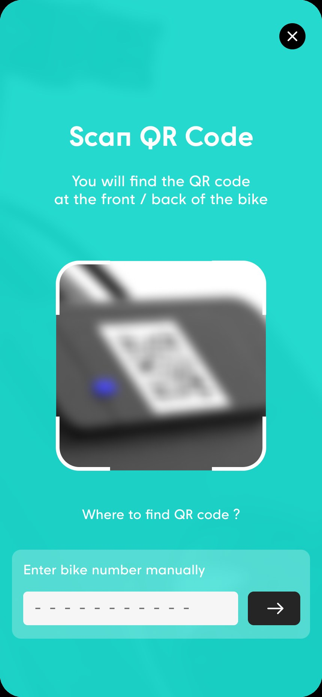
The scan button is the largest target in the app — a raised circle breaking out of the bottom bar, reachable with a thumb while the other hand is on the handlebar.
03 — Unlock and ride
Everything you'd check before getting on
Battery, range and price, on the screen that asks you to commit. Then a swipe rather than a tap, because unlocking a vehicle on a public street shouldn't be something a pocket can do by accident.
Scan
The code on the stem, the lock or the cross bar — or the number typed in by hand.
Check
90% battery, 20 km of range, 2 AED per minute, and the vehicle's ID to confirm it's the one in front of you.
Swipe
A deliberate gesture, not a button. The lock icon travels the width of the screen.
Ride
The screen becomes a live dashboard — zones, battery, elapsed time, distance and End Ride.
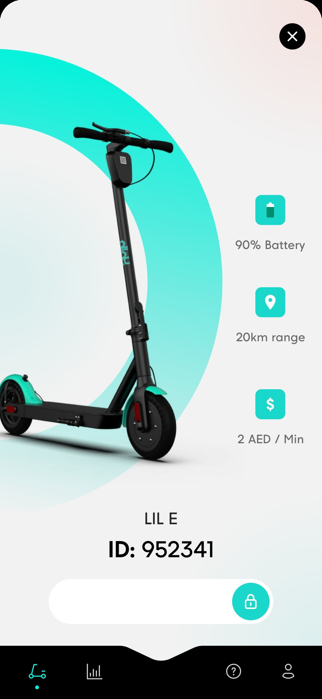
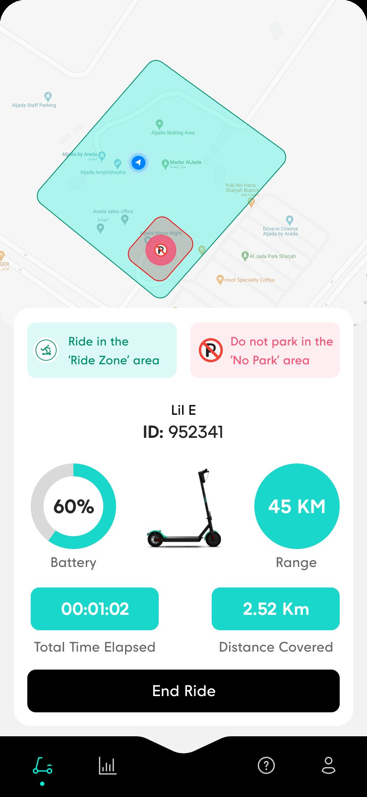
Found, unlocking, riding. The vehicle ID stays on screen throughout, so the rider can always confirm the app is driving the machine they're standing on.
Two zones, stated as rules
A teal polygon is where you may ride. A red square is where you may not park. Both are drawn on the map and written out as chips above it — “Ride in the ‘Ride Zone’ area” and “Do not park in the ‘No Park’ area” — because a colour on a map is a hint, and these two are conditions of the rental.
The dashboard answers the questions you'd ask mid-ride
How much charge is left, how far that gets me, how long I've been going, how far I've come. Four figures, no menu. End Ride is black and full width — the only way out, and impossible to miss.
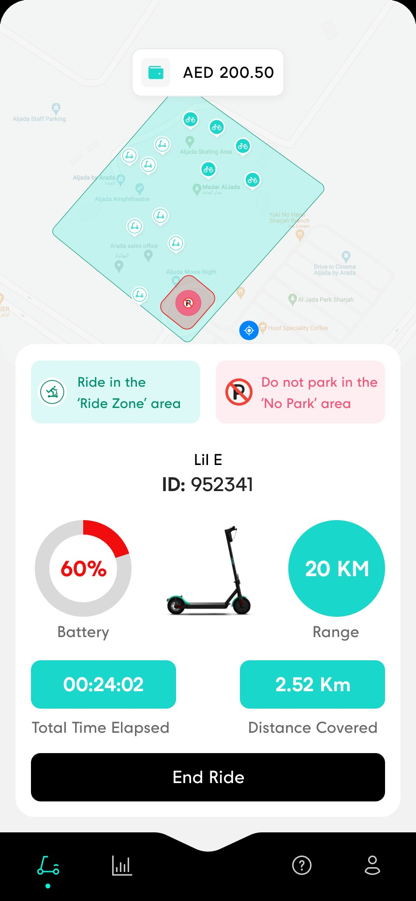
The battery ring changes colour as the range falls. Twenty-three minutes later in the same ride, the remaining range has dropped from 45 km to 20 km and the ring has gone from teal to red — a warning the rider gets while still moving, not at the moment the scooter stops.
04 — The first ride
The card is asked for once, at the moment it makes sense
A new rider isn't sent through a payment setup wizard before they've seen a vehicle. The card form lives inside the vehicle sheet, and only opens when they press Start Ride.
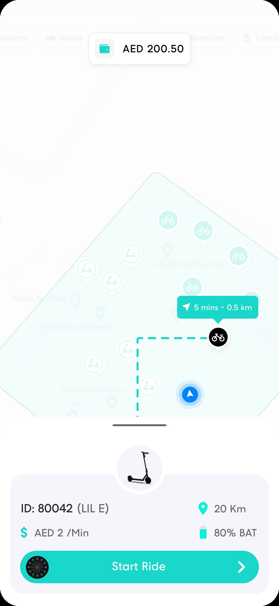
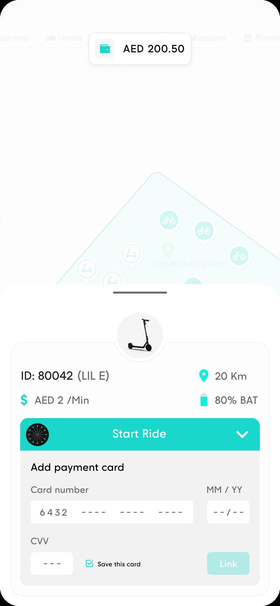
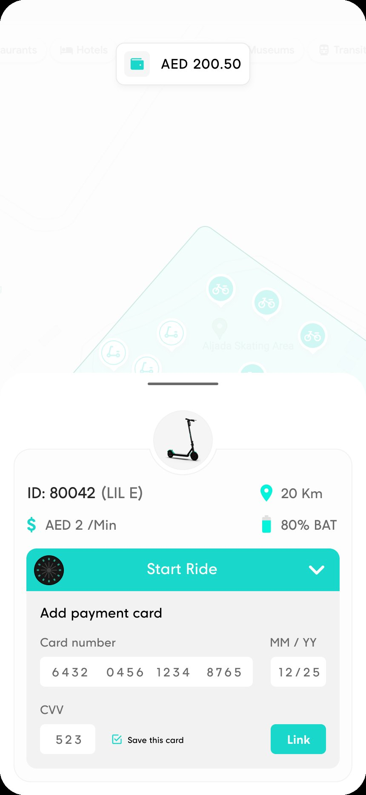
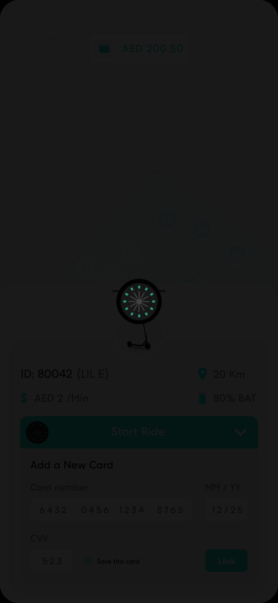
Vehicle first, card second. The sheet grows to hold the form instead of replacing the screen, so the rider never loses sight of what they're paying for.
The loader is part of the brand, not a system spinner. Teal dashes on a dark disc, matching the wheel motif — used for the one unavoidable wait in the flow, while the card is being linked.
A wallet, and cards behind it
The balance sits in a chip at the top of the map, next to a Top Up button — visible on every screen where it might matter, and never in the way. Cards are managed separately, with the selected one marked by a radio and any other removable by swiping the row to reveal a delete.
A ride ends in an invoice, not a receipt email
Every past ride in History carries the vehicle ID, duration, date, distance, the amount charged and an invoice number, with copy and download beside it — plus the route drawn as a small map, which is what people actually recognise a journey by.
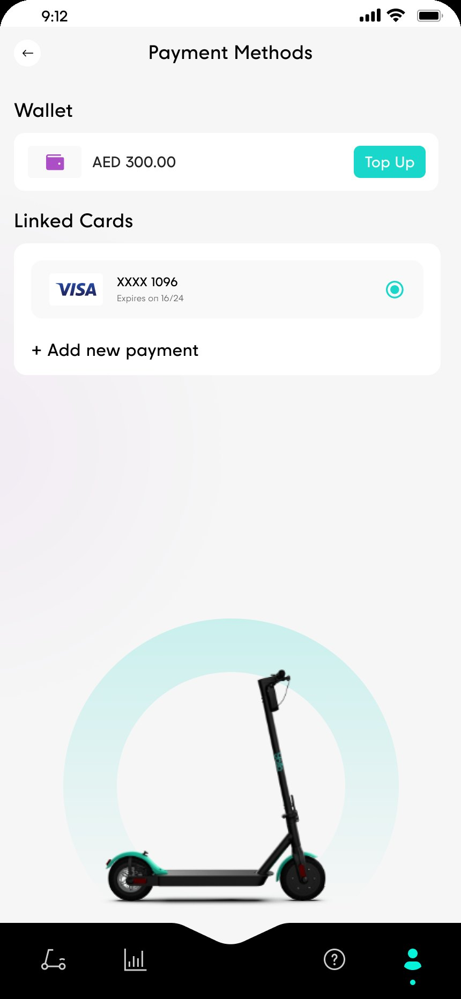
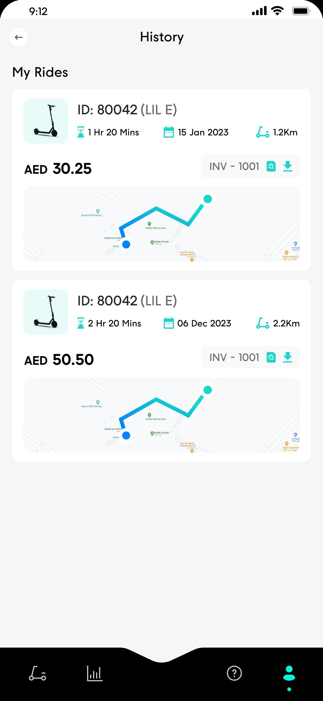
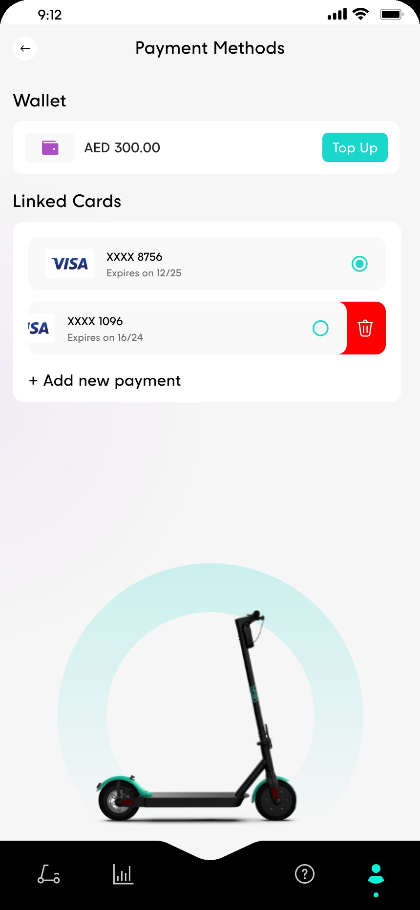
Wallet, history, and the destructive action kept behind a swipe.
05 — When it doesn't go smoothly
Help is a tab, not a dead end
Self-service only works if the fallback is real. Help sits in the bottom bar next to the scan button, and offers four different kinds of answer depending on how stuck the rider is.
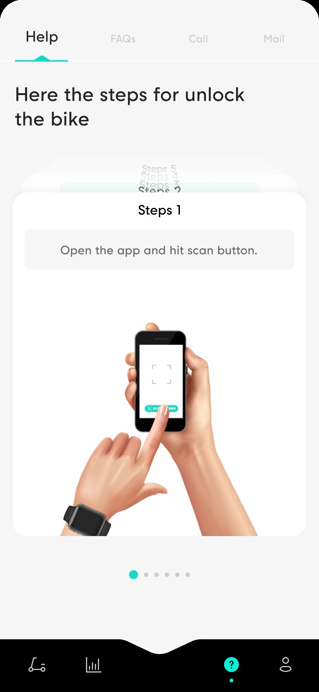
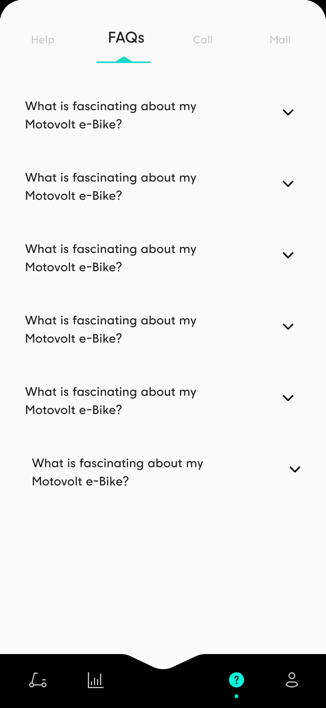
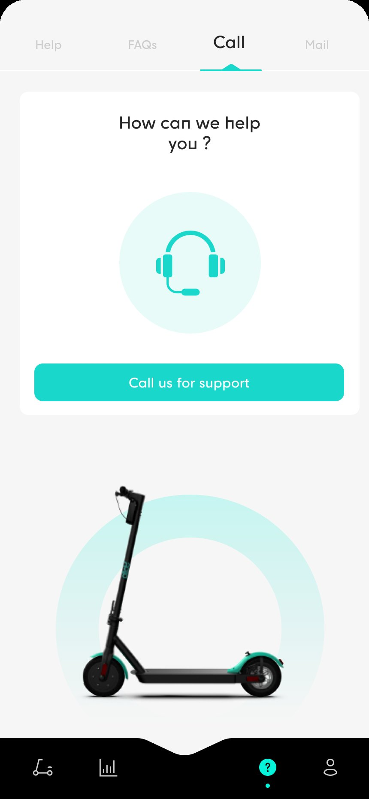
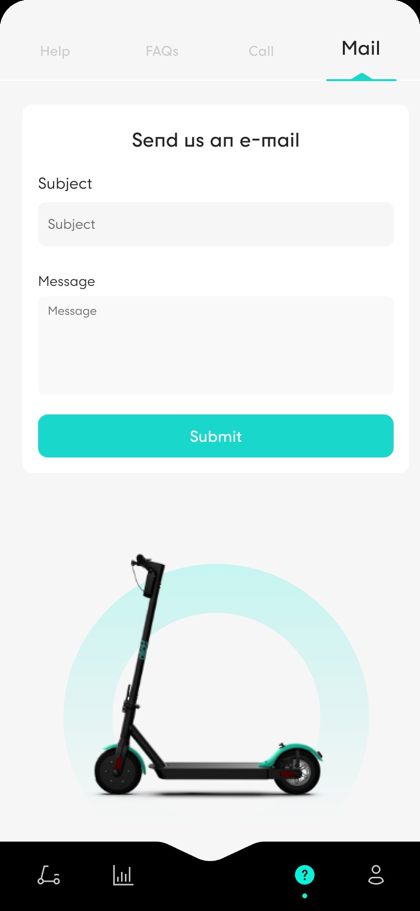
Four tabs, ranked by urgency. Steps for a first-timer, FAQs for a question, a phone call for someone stranded, email for everything else.
The steps carousel is the one that earns its place. A rider who can't unlock a vehicle is standing next to it, in a hurry, and doesn't want prose — so the first tab is a six-step illustrated walkthrough of exactly the flow they're stuck in, not a list of links.
What changes
The staff member is no longer in the critical path
Evidenced in the design
- Registration is self-service. A number and an SMS code — no documents, no counter.
- The vehicle starts the transaction. Scanning the QR on the handlebar replaces being handed a key.
- Nothing is printed. Invoices live in History with a number, a route and a download.
- One app, two fleets. Scooters and bikes share the map, the scanner and the ride screen.
- The flow has a manual fallback. A typed vehicle number when the camera can't help.
- Help sits inside the flow, one tap from the scan button, with a call option for a rider who's stuck.
Not measured
I don't have figures for time-to-first-ride, registration drop-off, the share of rentals completed without staff contact, or support volume — so none are claimed here. Everything above is what the interface does, not what it achieved.
What would prove it: minutes from opening the app to unlocking, completion rate through the four registration screens, how often the manual number entry is used instead of the camera, and the call button's tap rate.
Screens
The full set
Every screen referenced above, plus the ones that didn't get their own section. Click any to open it full size.
Next case study
Arada Broker App
The other onboarding problem: getting a brokerage verified, contracted and on site — identity capture, licence checks and a bilingual agency agreement.